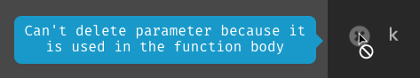
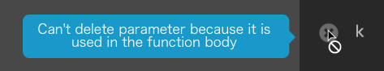
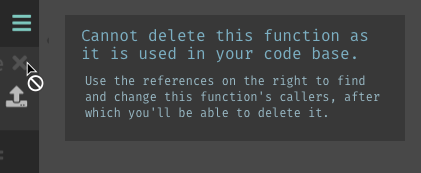
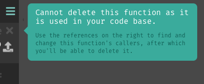
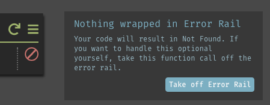

Onboard with tooltips
Backstory: Our new users problem
It is near impossible to learn Dark by exploration. New users would need the aid of our reference document or walkthrough videos.
I've been a big advocate for in-editor onboarding from the start, but we were never able to make time for the project.
Why? The Navigator vs The Explorer
Our initial business positioning rippled into our roadmap (and how we prioritized features).

Dark initially positioned itself as as a new language; it attracted attention from the programming languages community.
They approached new concepts with patience, willing to learn first before doing.
But they rarely ship projects in Dark.
Our most sucessful demographic turns out being new developers, students, and front-end or fullstack engineers.
And they learn by doing!

How can we tailor learning for the explorer?
- Sample project tutorials. Most Javascript Frameworks start with a todo List tutorial, because many frontend engineers are explorers.
- Tooltips have been aiding people learn software through exploration. They provide additional information to what non-obvious icons mean, and suggest actions users can perform.
- Code sharing empowers users to learn from eachother and build upon eachother's knowledge.
Let's focus on just this for now
- Tooltips have been aiding people learn software through exploration. They provide additional information to what non-obvious icons mean, and suggest actions users can perform.
We already have tooltips, but they are inconsistent in both style and behavior.
 |
 |
 |
My role: Design consistent tooltips
How do we change existing tooltips to single style?
How can we future-proof, so new tooltips will be in the same style?
But consistency can't be achieved with just rigor to a style.
We did not get into this mess because every contributor had different aesthetic preferences. We got here because each new tooltip added aimed only to solve the current issue. Let's take a step back to understand what we were trying to achieve in the past, and what we want to achieve in the future.
I approached this problem...
First by scavanging across entire product to find all instances in which "tooltips" are used.
Then I categorized them by the function they serve.
Lastly, theorized how we can use tooltips in the future to introduce Dark to new users, or highlight new features to seasoned users.
Taxonomize the chaos
Our editor has over 60 instances of tooltips, but they all fall into at least one of the four categories:
- Labels -- provide text equivalents (in 5 words or less) to icons
- Descriptions -- explain UI elements in more detail in a few sentences
- Exceptions -- explain deviations from expected behaviors
- Suggested actions -- tells a user to do something to help them along
Imagining a better world
Right now our tooltips have no memory.
They will show regardless if the user had seem the before. This can be more obstructive than helpful to a seasoned user's workflow.
If only we can determine the conditions they will appear in, then we can use them more often. And use them to help users learn Dark within the editor.
Now that we know, what our tooltip component will need. And also what we want our component to be able to support. Let's get designing!
Define product requirements

What do all tooltips have? Text.
What type of text?
Always a short message, sometimes followed by a longer description.
when & where should the tooltip show?

All tooltips are attached to a UI element to it will appear adjacent. And all tooltips will have a trigger condition. This defines the situations when the tooltip should appear. For most cases it is on hover.
and what else?
Some tooltips any contain a CTA. So our action button will have button text and on click handler
Tooltip component model
A tooltip component will have...
| Property | Data type | Required? |
|---|---|---|
| Attach to element | DOM element | Yes |
| Title | Text | Yes |
| Description | Text | No |
| Trigger condition | Function | Yes |
| Button label | Text | No |
| Button action | Function | No |
Now we've got the product down, let's make it pretty
Let's try it all
I made 6 different treatments. Just mocking out the simple case.
 |  | |
|  |  |  |
Let's try it all
We voted internally and chose the top 3 for which to hash out the details.
| ||
|
They were within the Dark style guidelines, so any choice they made will be ok.
now with details & action button
|  |  |
 |
|  |
giving our users a voice
We asked our users to vote on the top 3 styles
| and this won out | ||
| ||
| then we had to make some additional adjustments for contrast | ||
| ||
Testing out the tooltip component
If you recall, the goal of this project is to make all our existing tooltips conform to this style. When I took the component model to apply to all places we've been using tooltips. I realized we missed capturing one category.
Exceptions -- explain deviations from expected behaviors
Nowhere in our component design, do we distinguish between an informational tooltip vs an exception tooltip. So let's revise our tooltip model
Revised model
| Property | Data type | Required? |
|---|---|---|
| Attach to element | DOM element | Yes |
| Title | Text | Yes |
| Description | Text | No |
| Trigger condition | Function | Yes |
| Button label | Text | No |
| Button action | Function | No |
| Style | INFO or EXCEPTION | Yes |
Translating the new style property into UI
| INFO | | ||
| EXCEPTION |  |
The choice to have red on off-white was deliberate. I didn't want red-green color blind users to have difficulty telling the marine from the crimson. So instead of red-ish background, I used red title text.
Feasibility Test
If I am ever unsure the feasibility of my designs, I will test it out first.
See the Pen Tooltips by Alice Q (@alice) on CodePen.
I had to made sure it is possible for the engineer implementing this feature to easily designate on which side the tooltip should appear relative to the UI element it is attached to.
Future tooltips
The first part of this project was to make existing tooltips consistent. But I also want make onboarding new users easier with tooltips.
From watching many first time users struggle with our product, I wrote an proposal for all the places we should have tooltips that don't at the moment.
For example, Dark captures all incoming data, even invalid requests. Users can use that data to construct their program. We want to make sure new users knew about this feature.
Context aware tooltips
The image shows the element that the tooltip should be attached with, and also the style property (info or exception). The rest of the model is dictated in writing. For all design that requires copy, I write the copy in the specification document. This not only makes it easy for developers to copy and paste, but also for product people to edit it.
 | Title | Handle your 404 errors |
| Description | Dark keeps tracks of all incoming requests. You can create an HTTP handler populated with the data from the 404 requests. | |
| Trigger | This tooltip will appear, if the project has 404s, and the user has not yet created a handler from their 404s yet. It will appear without them hovering over the 404 icon. |
and when they create a request handler from the 404 or manually

| Title | Data from your incoming requests will appear here |
| Trigger | When a HTTP handler is first is created, it appears automatically |
- After defining...
- UI & behavior of tooltips
- Conversion guidelines of existing tooltips
- Ideas for new tooltips
I crossed my fingers and hope this feature will be prioritized to be implemented one day.
Luckly, after re-positioning our product to focus on in-editor learning. A product owner used this as a jumping off point to create an in-editor onboarding flow. And a frontend engineer implemented the tooltip component.
Lessons Learned
- I should have done contrast check at the very beginnin.
- When sharing this with teammates, I should have highlighted future tooltips part, instead of presenting it as an auxiliary bonus. It would have provided greater value to users than style consistency.